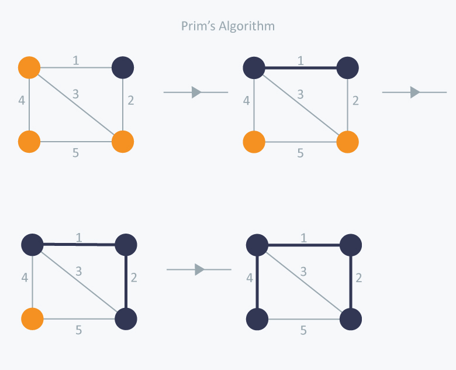

Basics before you get into Prim's and Kruskal Algorithm:
→
What is a Undirected Graph?
An undirected graph is graph, i.e., a set of objects (called vertices or nodes) that are connected together, where all the edges are bidirectional. An undirected graph is sometimes called an undirected network. In contrast, a graph where the edges point in a direction is called a directed graph.
→
What is a Spanning Tree?
Given an undirected and connected graph G=(V,E), a spanning tree of the graph G is a tree that spans G (that is, it includes every vertex of G) and is a subgraph of G (every edge in the tree belongs to G)
→
What is a Minimum Spanning Tree?(MST)
The cost of the spanning tree is the sum of the weights of all the edges in the tree. There can be many spanning trees. Minimum spanning tree is the spanning tree where the cost is minimum among all the spanning trees. There also can be many minimum spanning trees.
Minimum spanning tree has direct application in the design of networks. It is used in algorithms approximating the travelling salesman problem, multi-terminal minimum cut problem and minimum-cost weighted perfect matching. Other practical applications are:
- Cluster Analysis
- Handwriting recognition
- Image segmentation
→
What are Greedy Algorithms?
Greedy is an algorithmic paradigm that builds up a solution piece by piece, always choosing the next piece that offers the most obvious and immediate benefit. So the problems where choosing locally optimal also leads to global solution are best fit for Greedy.

There are two famous algorithms for finding the Minimum Spanning Tree: 1. Prim's Algorithm 2. Kruskal Algorithm
PRIM'S ALGORITHM
INTRODUCTION
Prim’s algorithm is also a Greedy algorithm. It starts with an empty spanning tree. The idea is to maintain two sets of vertices. The first set contains the vertices already included in the MST, the other set contains the vertices not yet included. At every step, it considers all the edges that connect the two sets, and picks the minimum weight edge from these edges. After picking the edge, it moves the other endpoint of the edge to the set containing MST.
Algorithm Steps
- Maintain two disjoint sets of vertices. One containing vertices that are in the growing spanning tree and other that are not in the growing spanning tree.
- Select the cheapest vertex that is connected to the growing spanning tree and is not in the growing spanning tree and add it into the growing spanning tree. This can be done using Priority Queues. Insert the vertices, that are connected to growing spanning tree, into the Priority Queue.
- Check for cycles. To do that, mark the nodes which have been already selected and insert only those nodes in the Priority Queue that are not marked.
Consider the example given below:

In Prim’s Algorithm, we will start with an arbitrary node (it doesn’t matter which one) and mark it. In each iteration we will mark a new vertex that is adjacent to the one that we have already marked. As a greedy algorithm, Prim’s algorithm will select the cheapest edge and mark the vertex. So we will simply choose the edge with weight 1. In the next iteration we have three options, edges with weight 2, 3 and 4. So, we will select the edge with weight 2 and mark the vertex. Now again we have three options, edges with weight 3, 4 and 5. But we can’t choose edge with weight 3 as it is creating a cycle. So we will select the edge with weight 4 and we end up with the minimum spanning tree of total cost 7 ( = 1 + 2 +4).
ALGORITHM:
//Prim's algorithm to construct a minimum spanning tree
INPUT: A weighted connected graph, G=(V,E)
OUTPUT: Et, the set of edges composing a minimum spanning of G.
Vt ← Vo
Et ← 0
for i ←1 to |V|-1
Find a minimum weight edge e*=(v*,u*) among all the edges (u,v), such that v is in Vt and
u is in V-Vt
Vt ← Vt U {u*}
Et ← Et U {e*}
return Et
KRUSKAL ALGORITHM
INTRODUCTION
Kruskal's algorithm to find the minimum cost spanning tree uses the greedy approach. This algorithm treats the graph as a forest and every node it has as an individual tree. A tree connects to another only and only if, it has the least cost among all available options and does not violate MST properties.
Algorithm Steps
- Sort the graph edges with respect to their weights.
- Start adding edges to the MST from the edge with the smallest weight until the edge of the largest weight.
- Only add edges which doesn't form a cycle , edges which connect only disconnected components.
Consider an example given below:

In Kruskal’s algorithm, at each iteration we will select the edge with the lowest weight. So, we will start with the lowest weighted edge first i.e., the edges with weight 1. After that we will select the second lowest weighted edge i.e., edge with weight 2. Notice these two edges are totally disjoint. Now, the next edge will be the third lowest weighted edge i.e., edge with weight 3, which connects the two disjoint pieces of the graph. Now, we are not allowed to pick the edge with weight 4, that will create a cycle and we can’t have any cycles. So we will select the fifth lowest weighted edge i.e., edge with weight 5. Now the other two edges will create cycles so we will ignore them. In the end, we end up with a minimum spanning tree with total cost 11 ( = 1 + 2 + 3 + 5).
ALGORITHM:
// Algorithm Kruskal (E, cost, n, t)
// E is the set of edges in G. G has n vertices , cost[u,v] is the cost of edge(u,v). t is the set of edges in the minimium cost spanning tree. The final cost is returned.
{
Construct a heap out of the edge costs using heapify;
for i ← 1 to n do parent[i] = -1;
// Each vertex is in a different set
i ← 0, mincost ← 0.0;
while ((i < n-1) and (heap not empty)) do
{
delete a minimum cost edge (u,v) from the heap and reheapify using adjust;
j ← Find(u); K ← Find(v);
if (j ≠ k) then
{
i ← i + 1;
t[i,1] ← u; t[i,2] ← v;
mincost ← mincost + cost[u,v];
union(j,k);
}
}
if (i ≠ n-1) then write ('No spanning tree');
else return mincost;
}